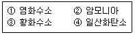

가스기능사 (2013-04-14 기출문제)
1과목: 가스안전관리
1. LPG 충전시설의 충전소에 기재한 “화기엄금”이라고 표시한 게시판의 색깔로 옳은 것은?
- 황색바탕에 흑색글씨
- 황색바탕에 적색글씨
- 흰색바탕에 흑색글씨
- 흰색바탕에 적색글씨
(정답률: 84%)

2. 특정고압가스사용시설 중 고압가스 저장량이 몇 kg 이상인 용기보관실에 있는 벽을 방호벽으로 설치하여야 하는가?
- 100
- 200
- 300
- 500
(정답률: 66%)
3. 도시가스 중 음식물쓰레기, 가축 분뇨, 하수슬러지 등 유기성폐기물로부터 생성된 기체를 정제한 가스로서 메탄이 주성분인 가스를 무엇이라 하는가?
- 천연가스
- 나프타부생가스
- 석유가스
- 바이오가스
(정답률: 80%)
4. 방폭전기기기의 용기 내부에서 가연성가스의 폭발이 발생할 경우 그 용기가 폭발압력에 견디고, 접합면, 개구부 등을 통해 외부의 가연성가스에 인화되지 않도록 한 방폭구조는?
- 내압(耐壓) 방폭구조
- 유입(油入) 방폭구조
- 압력(壓力) 방폭구조
- 본질안전 방폭구조
(정답률: 85%)
5. 독성가스 여부를 판정할 때 기준이 되는 “허용농도”를 바르게 설명한 것은?
- 해당가스를 성숙한 흰쥐 집단에게 대기 중에서 1시간 동안 계속하여 노출시킨 경우 7일 이내에 그 흰쥐의 1/2 이상이 죽게 되는 가스의 농도를 말한다.
- 해당가스를 성숙한 흰쥐 집단에게 대기 중에서 24시간동안 계속하여 노출시킨 경우 7일 이내에 그 흰쥐의 1/2 이상이 죽게 되는 가스의 농도를 말한다.
- 해당가스를 성숙한 흰쥐 집단에게 대기 중에서 1시간동안 계속하여 노출시킨 경우 14일 이내에 그 흰쥐의 1/2 이상이 죽게 되는 가스의 농도를 말한다.
- 해당가스를 성숙한 흰쥐 집단에게 대기 중에서 24시간동안 계속하여 노출시킨 경우 14일 이내에 그 흰쥐의 1/2 이상이 죽게 되는 가스의 농도를 말한다.
(정답률: 70%)
6. 다음 보기의 독성가스 중 독성(LC50)이 가장 강한 것과 가장 약한 것을 바르게 나열한 것은?

- ①, ②
- ①, ④
- ③, ②
- ③, ④
(정답률: 85%)
7. 다음 가연성가스 중 공기 중에서의 폭발 범위가 가장 좁은 것?
- 아세틸렌
- 프로판
- 수소
- 일산화탄소
(정답률: 83%)
8. 산소 가스설비의 수리 및 청소를 위한 저장탱크 내의 산소를 치환할 때 산소측정기 등으로 치환결과를 측정하여 산소의 농도가 최대 몇 % 이하가 될 때까지 계속하여 치환작업을 하여야 하는가?
- 18%
- 20%
- 22%
- 24%
(정답률: 79%)
9. 원심식압축기를 사용하는 냉동설비는 그 압축기의 원동기 정격출력 몇 kw를 1일의 냉동능력 1톤으로 산정하는가?
- 1.0
- 1.2
- 1.5
- 2.0
(정답률: 74%)
10. 다음의 고압가스의 용량을 차량에 적재하여 운반할 때 운반책임자를 동승시키지 않아도 되는 것은?
- 아세틸렌 : 400m3
- 일산화탄소 : 700m3
- 액화염소 : 6500kg
- 액화석유가스 : 2000kg
(정답률: 73%)
11. 고압가스 제조시설에 설치되는 피해저감설비로 방호벽을 설치해야하는 경우가 아닌 것은?
- 압축기와 충전장소 사이
- 압축기와 가스충전용기 보관장소 사이
- 충전장소와 충전용 주관밸브 조작밸브 사이
- 압축기와 저장탱크 사이
(정답률: 49%)
12. 고압가스의 제조시설에서 실시하는 가스설비의 점검 중 사용개시 전에 점검할 사항이 아닌 것은?
- 기초의 경사 및 침하
- 인터록, 자동제어장치의 기능
- 가스설비의 전반적인 누출 유무
- 배관 계통의 밸브 개폐 상황
(정답률: 70%)
13. 액화가스를 운반하는 탱크로리(차량에 고정된 탱크)의 내부에 설치하는 것으로서 탱크 내 액화가스 액면요동을 방지하기 위해 설치하는 것은?
- 폭발방지장치
- 방파판
- 압력방출장치
- 다공성 충진제
(정답률: 90%)
14. 가스공급 배관 용접 후 검사하는 비파괴 검사방법이 아닌 것은?
- 방사선투과검사
- 초음파탐상검사
- 자분탐상검사
- 주사전자현미경검사
(정답률: 77%)
15. 산소 저장설비에서 저장능력이 9,000m3 일 경우 1종 보호시설 및 2종 보호시설과의 안전거리는?
- 8m, 5m
- 10m, 7m
- 12m, 8m
- 14m, 9m
(정답률: 81%)
16. 액화석유가스의 시설기준 중 저장탱크의 설치 방법으로 틀린 것은?
- 천장, 벽 및 바닥의 두께가 각각 30cm 이상의 방수조치를 한 철근콘크리트구조로 한다.
- 저장탱크실 상부 윗면으로부터 저장탱크 상부까지의 깊이는 60cm 이상으로 한다.
- 저장탱크에 설치한 안전밸브에는 지면으로부터 5m 이상의 방출관을 설치한다.
- 저장탱크 주위 빈 공간에는 세립분을 25% 이상 함유한 마른 모래를 채운다.
(정답률: 66%)
17. 다음 중 고압가스의 성질에 따른 분류에 속하지 않는 것은?
- 가연성 가스
- 액화 가스
- 조연성 가스
- 불연성 가스
(정답률: 85%)
18. 다음 중 화학적 폭발로 볼 수 없는 것은?
- 증기폭발
- 중합폭발
- 분해폭발
- 산화폭발
(정답률: 77%)
19. 가연성가스의 위험성에 대한 설명으로 틀린 것은?
- 누출 시 산소결핍에 의한 질식의 위험성이 있다.
- 가스의 온도 및 압력이 높을수록 위험성이 커진다.
- 폭발한계가 넓을수록 위험하다.
- 폭발하한이 높을수록 위험하다.
(정답률: 84%)
20. 시안화수소의 중합폭발을 방지할 수 있는 안정제로 옳은 것은?
- 수증기, 질소
- 수증기, 탄산가스
- 질소, 탄산가스
- 아황산가스, 황산
(정답률: 75%)
21. LPG를 수송할 때의 주의사항으로 틀린 것은?
- 운전중이나 정차중에도 허가된 장소를 제외하고는 담배를 피워서는 안 된다.
- 운전자는 운전기술 외에 LPG의 취급 및 소화기 사용 등에 관한 지식을 가져야 한다.
- 주차할 때는 안전한 장소에 주차하며, 운반책임자와 운전자는 동시에 차량에서 이탈하지 않는다.
- 누출됨을 알았을 때는 가까운 경찰서, 소방서까지 직접 운행하여 알린다.
(정답률: 92%)
22. 염소의 성질에 대한 설명으로 틀린 것은?
- 상온, 상압에서 황록색의 기체이다.
- 수분 존재 시 철을 부식시킨다.
- 피부에 닿으면 손상의 위험이 있다.
- 암모니아와 반응하여 푸른 연기를 생성한다.
(정답률: 76%)
23. 수소에 대한 설명 중 틀린 것은?
- 수소용기의 안전밸브는 가용전식과 파열판식을 병용한다.
- 용기밸브는 오른나사이다.
- 수소 가스는 피로카를 시약을 사용한 오르자트법에 의한 시험법에서 순도가 98.5% 이상이어야 한다.
- 공업용 용기의 도색을 주황색으로 하고 문자의 표시는 백색으로 한다.
(정답률: 78%)
24. 다음 중 폭발성이 예민하므로 마찰 및 타격으로 격렬히 폭발하는 물질에 해당되지 않는 것은?
- 황화질소
- 메틸아민
- 염화질소
- 아세틸라이드
(정답률: 69%)
25. 고압가스 특정제조시설 중 철도부지 밑에 매설하는 배관에 대한 설명으로 틀린 것은?
- 배관의 외면으로부터 그 철도부지의 경계까지는 1m 이상의 거리를 유지한다.
- 지표면으로부터 배관의 외면까지의 깊이를 60cm 이상 유지한다.
- 배관은 그 외면으로부터 궤도 중심과 4m 이상 유지한다.
- 지하철도 등을 횡단하여 매설하는 배관에는 전기방식조치를 강구한다.
(정답률: 49%)
26. 다음 중 같은 저장실에 혼합 저장이 가능한 것은?
- 수소와 염소가스
- 수소와 산소
- 아세틸렌가스와 산소
- 수소와 질소
(정답률: 82%)
27. 용기 부속품에 각인하는 문자 중 질량을 나타내는 것은?
- TP
- W
- AG
- V
(정답률: 86%)
28. 고압가스특정제조시설에서 지하매설 배관은 그 외면으로부터 지하의 다른 시설물과 몇 m 이상 거리를 유지하여야 하는가?
- 0.1
- 0.2
- 0.3
- 0.5
(정답률: 69%)
29. 도시가스 사용시설 중 가스계량기와 다음 설비와의 안전거리의 기준으로 옳은 것은?
- 전기계량기와는 60cm 이상
- 전기접속기와는 60cm 이상
- 전기점멸기와는 60cm 이상
- 절연조치를 하지 않는 전선과는 30cm 이상
(정답률: 79%)
30. 고압가스 제조설비에서 누출된 가스의 확산을 방지할 수 있는 제해조치를 하여야 하는 가스가 아닌 것은?
- 이산화탄소
- 암모니아.
- 염소
- 염화메틸
(정답률: 74%)
2과목: 가스장치 및 기기
31. 흡수식냉동기에서 냉매로 물을 사용할 경우 흡수제로 사용하는 것은?
- 암모니아
- 사염화에탄
- 리튬브로마이드
- 파라핀유
(정답률: 62%)
32. 다음 중 이음매 없는 용기의 특징이 아닌 것은?
- 독성 가스를 충전하는데 사용한다.
- 내압에 대한 응력 분포가 균일하다.
- 고압에 견디기 어려운 구조이다.
- 용접용기에 비해 값이 비싸다.
(정답률: 80%)
33. 부유 피스톤형 압력계에서 실린더 지름 5cm, 추와 피스톤의 무게가 130kg 일 때, 이 압력계에 접속된 부르동관의 압력계 눈금이 7kg/cm2를 나타내었다. 그 부르동관 압력계의 오차는 약 몇 % 인가?
- 5.7
- 6.6
- 9.7
- 10.5
(정답률: 41%)
34. 다음 고압가스 설비 중 축열식 반응기를 사용하여 제조하는 것은?
- 아크릴로라이드
- 염화비닐
- 아세틸렌
- 에틸벤젠
(정답률: 58%)
35. 열기전력을 이용한 온도계가 아닌 것은?
- 백금 - 백금·로듐 온도계
- 동 - 콘스탄탄 온도계
- 철 - 콘스탄탄 온도계
- 백금 - 콘스탄탄 온도계
(정답률: 72%)
36. 다음 중 유체의 흐름방향을 한 방향으로만 흐르게 하는 밸브는?
- 글로우밸브
- 체크밸브
- 앵글밸브
- 게이트밸브
(정답률: 82%)
37. 다음 가스 분석 중 화학분석법에 속하지 않는 방법은?
- 가스크로마토그래피법
- 중량법
- 분광광도법
- 요오드적정법
(정답률: 66%)
38. 다음 고압장치의 금속재료 사용에 대한 설명으로 옳은 것은?
- LNG 저장탱크 - 고장력강
- 아세틸렌 압축기 실린더 - 주철
- 암모니아 압력계 도관 - 동
- 액화산소 저장탱크 - 탄소강
(정답률: 50%)
39. 고압가스 설비의 안전장치에 관한 설명 중 옳지 않는 것은?
- 고압가스 용기에 사용되는 가용전은 열을 받으면 가용합금이 용해되어 내부의 가스를 방출한다.
- 액화가스용 안전밸브의 토출량은 저장탱크 등의 내부의 액화가스가 가열될 때의 증발량 이상이 필요하다.
- 급격한 압력상승이 있는 경우에는 파열판은 부적당하다.
- 펌프 및 배관에는 압력상승 방지를 위해 릴리프 밸브가 사용된다.
(정답률: 65%)
40. 다음 중 압력계 사용 시 주의사항으로 틀린 것은?
- 정기적으로 점검한다.
- 압력계의 눈금판은 조작자가 보기 쉽도록 안면을 향하게 한다.
- 가스의 종류에 적합한 압력계를 선정한다.
- 압력의 도입이나 배출은 서서히 행한다.
(정답률: 79%)
41. LPG(C4H10) 공급방식에서 공기를 3배 희석했다면 발열량은 약 몇 kcal/Sm3이 되는가? (단, C4H10의 발열량은 30000kcal/Sm3으로 가정한다.)
- 5000
- 7500
- 10000
- 11000
(정답률: 52%)
42. 고압가스제조소의 작업원은 얼마의 기간 이내에 1회 이상 보호구의 사용훈련을 받아 사용방법을 숙지하여야 하는가?
- 1개월
- 3개월
- 6개월
- 12개월
(정답률: 83%)
43. 고점도 액체나 부유 현탁액의 유체 압력측정에 가장 적당한 압력계는?
- 벨로우즈
- 다이어프램
- 부르동관
- 피스톤
(정답률: 52%)
44. 내산화성이 우수하고 양파 썩는 냄새가 나는 부취제는?
- T.H.T
- T.B.M
- D.M.S
- NAPHTHA
(정답률: 74%)
45. 계측기기의 구비조건으로 틀린 것은?
- 설치장소 및 주위조건에 대한 내구성이 클 것
- 설비비 및 유지비가 적게 들것
- 구조가 간단하고 정도(精度)가 낮을 것
- 원거리 지시 및 기록이 가능할 것
(정답률: 85%)
3과목: 가스일반
46. 다음 중 화씨온도와 가장 관계가 깊은 것은?
- 표준대기압에서 물의 어는점을 0으로 한다.
- 표준대기압에서 물의 어는점을 12로 한다.
- 표준대기압에서 물의 끓는점을 100으로 한다.
- 표준대기압에서 물의 끓는점을 212로 한다.
(정답률: 77%)
47. 다음 주 부탄가스의 완전연소 반응식은?
- C3H8＋4O2 → 3CO2＋5H2O
- C3H8＋5O2 → 3CO2＋4H2O
- C4H10＋602 → 4CO2＋5H2O
- 2C4H10＋1302 → 8CO2＋10H2O
(정답률: 61%)
48. LP 가스의 성질에 대한 설명으로 틀린 것은?
- 온도변화에 따른 액 팽창률이 크다
- 석유류 또는 동, 식물유나 천연고무를 잘 용해시킨다.
- 물에 잘 녹으며 알코올과 에테르에 용해된다.
- 액체는 물보다 가볍고, 기체는 공기보다 무겁다.
(정답률: 52%)
49. 가스배관 내 잔류물질을 제거할 때 사용하는 것이 아닌 것은?
- 피그
- 거버너
- 압력계
- 컴프레서
(정답률: 61%)
50. 염소에 대한 설명 중 틀린 것은?
- 황록색을 띠며 독성이 강하다.
- 표백작용이 있다.
- 액상은 물보다 무겁고 기상은 공기보다 가볍다.
- 비교적 쉽게 액화된다.
(정답률: 72%)
51. 도시가스 제조공정 중 접촉분해공정에 해당하는 것은?
- 저온수증기 개질법
- 열분해 공정
- 부분연소 공정
- 수소화분해 공정
(정답률: 45%)
52. -10℃ 인 얼음 10kg을 1기압에서 증기로 변화시킬 때 필요한 열량은 약 몇 kcal 인가? (단, 얼음의 비열은 0.5kcal/kg.℃, 얼음의 용해열은 80kcal/kg, 물의 기화열은 539kcal/kg 이다.)
- 5400
- 6000
- 6240
- 7240
(정답률: 39%)
53. 다음 중 1atm과 다른 것은?
- 9.8N/m2
- 101325Pa
- 14.7 lb/in2
- 10.332 mH2O
(정답률: 59%)
54. 산소 가스의 품질검사에 사용되는 시약은?
- 동·암모니아 시약
- 피로카롤 시약
- 브롬 시약
- 하이드로 썰파이드 시약
(정답률: 65%)
55. 표준상태에서 산소의 밀도는 몇 g/L 인가?
- 1.33
- 1.43
- 1.53
- 1.63
(정답률: 71%)
56. 공기 중에 누출 시 폭발 위험이 가장 큰 가스는?
- C3H8
- C4H10
- CH4
- C2H2
(정답률: 57%)
57. 표준물질에 대한 어떤 물질의 밀도는 비를 무엇이라고 하는가?
- 비중
- 비중량
- 비용
- 비열
(정답률: 83%)
58. LP가스가 증발할 때 흡수하는 열을 무엇이라 하는가?
- 현열
- 비열
- 잠열
- 융해열
(정답률: 70%)
59. LP가스를 자동차연료로 사용할 때의 장점이 아닌 것은?
- 배기가스의 독성이 가솔린보다 적다.
- 완전연소로 발열량이 높고 청결하다.
- 옥탄가가 높아서 녹킹현상이 없다.
- 균일하게 연소되므로 엔진수명이 연장된다.
(정답률: 73%)
60. 다음 중 염소의 주된 용도가 아닌 것은?
- 표백
- 살균
- 염화비닐 합성
- 강재의 녹 제거용
(정답률: 69%)